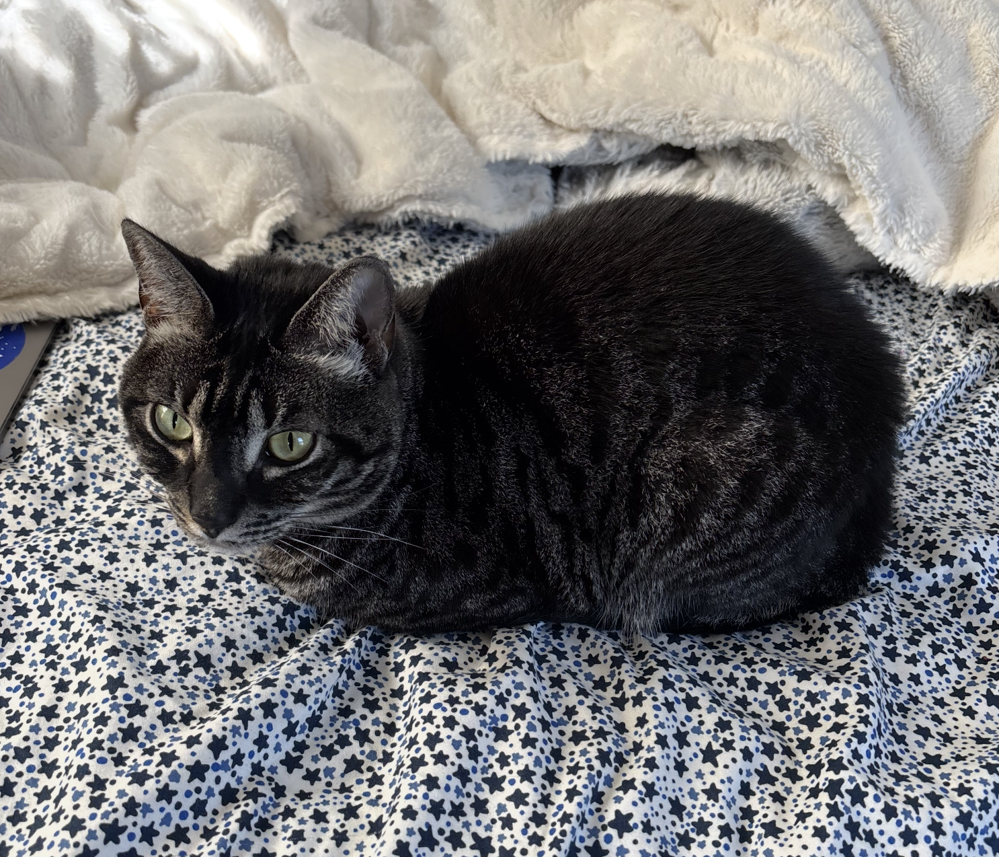

Fork in a basket in the air (originally meant for a plant to sit in)

Fork yawning with all her teeth on display

Fork examining a poorly constructed gingerbread house

Here is a painting of Fork done by Bella

Fork looking quite majestic with an owl in the background

Fork being very serious in her tower

Fork hard at work coding up a storm

Fork summoning the spirit of her big cat ancestors

A bag of leaves is tempting Fork to explore

Fork exploring the great outdoors

Fork in monk mode, contemplating life

Fork surrounded by stars